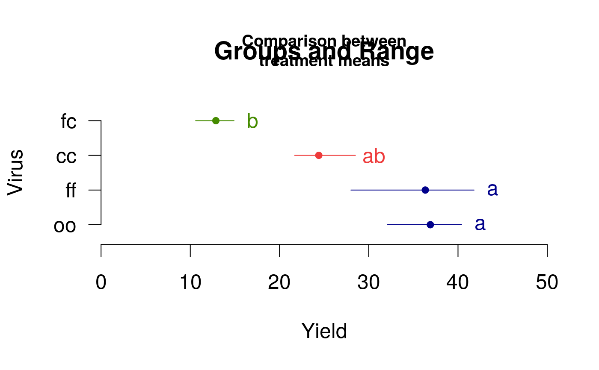

plot.group.RdIt plots bars of the averages of treatments to compare. It uses the objects generated by a procedure of comparison like LSD, HSD, Kruskall, Waller-Duncan, Friedman or Durbin. It can also display the 'average' value over each bar in a bar chart.
# S3 method for group plot(x,variation=c("range","IQR","SE","SD"), horiz=FALSE, col=NULL,xlim=NULL,ylim=NULL,main=NULL,cex=NULL,hy=0,...)
| x | Object created by a test of comparison |
|---|---|
| variation | in lines by range, IQR, standard deviation or error |
| horiz | Horizontal or vertical image |
| col | line colors |
| xlim | optional, axis x limits |
| ylim | optional, axis y limits |
| main | optional, main title |
| cex | optional, group label size |
| hy | optional, default =0, sum group label position |
| ... | Parameters of the function barplot() |
The output is a vector that indicates the position of the treatments on the coordinate axes.
BIB.test, DAU.test, duncan.test,
durbin.test, friedman, HSD.test,
kruskal, LSD.test, Median.test,
PBIB.test, REGW.test, scheffe.test,
SNK.test, waerden.test, waller.test
library(agricolae) data(sweetpotato) model<-aov(yield~virus,data=sweetpotato) comparison<- LSD.test(model,"virus",alpha=0.01,group=TRUE) #startgraph par(cex=1.5) plot(comparison,horiz=TRUE,xlim=c(0,50),las=1)#endgraph